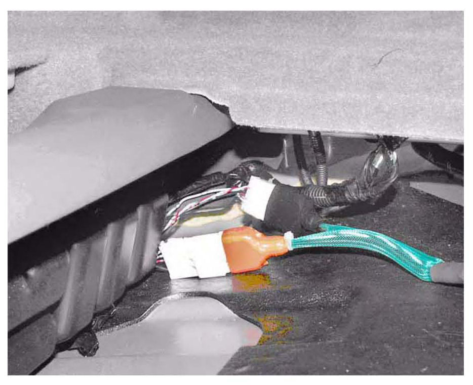

AcuraLink(R) - Control Unit Updating Information
07-027May 3, 2012
Applies To:
ALL Vehicles With AcuraLink
Updating the AcuraLink Control Unit
(Supersedes 07-027, dated September 13, 2008, to revise the information marked by the black bars and asterisks)
REVISION SUMMARY
*^ In BACKGROUND, a note was added about GNA600 availability through the Acura Special Tool Loan Program.
^ In REQUIRED TOOLS AND EQUIPMENT, the Compact Flash (CF) Memory Card and Adapter, the 512 MB CF Card, and the PCMCIA to CF Adapter were removed because they're no longer used in this update procedure.
^ In UPDATING THE ACURALINK CONTROL UNIT, the tools used in step 5 were revised.*
BACKGROUND
NOTE:
The procedures in this service bulletin are referenced in other service bulletins.
All Acura models equipped with the AcuraLink option have a reprogrammable AcuraLink control unit. This unit is also known as the XM (HIP) receiver.
To update or reprogram the AcuraLink control unit, you need the vehicle and an Interactive Network (iN) workstation with the latest version of the Honda Diagnostic System (HDS) software and the GNA600 unit.
NOTE:
^ For information on installing the HDS software to your iN workstation, refer to Installation Instructions for HDS PC Software in the Tool Information menu under SEARCH BY PUBLICATION on ISIS.
^ Whenever you install a new AcuraLink control unit, you must use the AcuraLink control unit updating procedure to make sure it has the latest software.
*^ The GNA600 is available from the Acura Special Tool Loan Program. To request the loan of a special tool, call.
^ To order replacement parts for the GNA600 Kit, log onto the Interactive Network (iN). Click on Service > Quick Links > Tool and Equipment Program.*
This service bulletin describes these items:
^ Questions or problems with the AcuraLink update software, the GNA600 unit, or the Interactive Network
^ Required tools and equipment
^ Updating tips
^ Updating the AcuraLink control unit on 2007-08 TLs and 2007-09 MDXs
^ Updating the AcuraLink control unit on models other than 2007-08 TLs and 2007-09 MDXs
^ Verifying the AcuraLink system operation (described after each updating procedure)
WARRANTY CLAIM INFORMATION
Skill Level: Repair Technician
Refer to the specific service bulletin for the symptom
you are repairing.
QUESTIONS OR PROBLEMS WITH THE ACURALINK UPDATE SOFTWARE, THE GNA600
UNIT, OR THE INTERACTIVE NETWORK
For questions or problems with the AcuraLink update software or the GNA600, call the American Honda Special Tools Hotline.
For questions or problems with the Interactive Network (iN), call the iN Support Center.
REQUIRED TOOLS AND EQUIPMENT
iN Workstation (with the latest HDS software installed)
NOTE:
The GNA600 kit, the reprogramming cable, the cable adapter, and the memory card are available through the Acura Tool and Equipment Program.
Go to the Interactive Network (iN), click on Service, then click on Service Bay, and select Tool and Equipment Program from the drop-down menu, or call.
Updating the AcuraLink control unit requires these
items from the GNA600 kit:
UPDATING TIPS
^ Whenever you install a new AcuraLink control unit, you must use the AcuraLink control unit updating procedure to make sure it has the latest software.
^ If you are updating a control unit in a new vehicle, make sure all the fuses are installed.
^ To prevent damage to the control unit, do not operate anything electrical (brakes, headlights, etc.) during the update.
^ If you encounter errors in the software or the updating process, follow the on-screen instructions or reboot the workstation, and try again.
^ There are five processes involved in updating the AcuraLink control unit:
^ Setting up the GNA600
^ Capturing the current program ID
^ Downloading the new software to the GNA600 unit
^ Updating the software in the AcuraLink control unit
^ Verifying the AcuraLink system operation
NOTE:
Before you update an AcuraLink control unit, read the entire procedure. The order of connecting and disconnecting connectors is critical, and some steps must be done within a specified period of time. If the steps are not followed exactly as shown, you may have to repeat the procedure from the beginning and, in some cases, you may damage the GNA600 unit and/or the AcuraLink control unit.
UPDATE THE ACURALINK CONTROL UNIT:
2007-08 TL AND 2007-09 MDX
1. Write down the XM audio presets.
2. Turn the ignition switch to LOCK (0).
3. Connect an Acura Diagnostic Battery Station (GR8-1100PA) to the battery, and select Power Supply from the Options menu. Follow the prompts on the screen to start the power supply mode. If the battery station indicates that the battery must be charged before reprogramming, select YES to charge the battery. Restart the power supply mode when the battery is fully charged.
Do not use a battery charger or the charging mode on the battery station when updating the AcuraLink control unit
[NOTICE]
If the battery dies during the updating procedure, the AcuraLink control unit will be permanently damaged.
At the workstation: Set up the GNA600 unit
4. If not already done, load the latest HDS software onto the iN workstation.
^ If the latest version is not loaded and you try to update a control unit, the software may indicate that the unit already has the latest software, even though it does not.
^ For information on installing the HDS software to your iN workstation, refer to Installation Instructions for HDS PC Software in the Tool Information menu under SEARCH BY PUBLICATION on ISIS.
*5. Make sure the 256 MB PCMCIA Memory Card is in the PCMCIA slot under the clear plastic cover on the GNA600 unit.*
6. From the Windows Start menu on your iN workstation, go to the Programs folder and select CM Update, and then select AcuraLink Update.
Follow the on-screen instructions. The on-screen instructions are summarized in the following steps.
7. Connect the USB PC interface cable to the workstation and to the GNA600.
8. Connect the GNA600 unit to the power supply unit, and connect the power supply unit to an electrical outlet. The GNA600 unit starts a self-check, and after about 30 seconds, the LEDs on the GNA600 unit flash green and yellow. This indicates the GNA600 is ready to capture the current program ID on the vehicle.
9. Disconnect the GNA600 unit from the USB PC interface cable and the power supply.
At the vehicle: Capture the current program ID
10. Make sure the ignition switch is turned to LOCK (0). Locate and disconnect the AcuraLink 5P connector.
NOTE:
The AcuraLink update software shows the connector location on the workstation screen.
11. Connect the black connector of the AcuraLink reprogramming cable adapter to the 5P connector (with female terminals) on the vehicle, then connect the orange connector to the other 5P connector.

MDX shown for reference
12. Connect the blue No. 1 connector of the AcuraLink reprogramming cable to the blue connector of the reprogramming cable adapter.
13. Connect the black No. 2 connector of the AcuraLink reprogramming cable to the DLC cable. Connect the DLC cable to the GNA600 unit. The LEDs on the GNA600 unit flash green and yellow. Within 30 seconds of the LEDs flashing, do step 14.
14. Connect the yellow No. 3 connector of the AcuraLink reprogramming cable to the yellow connector of the reprogramming cable adapter.
15. After the green LEDs on the GNA600 unit stay on, disconnect the DLC cable from the unit. The current program ID has been captured.
16. Disconnect the yellow No. 3 connector of the reprogramming cable from the cable adapter.
At the workstation: Download the new software to the GNA600 unit
17. Connect the USB PC interface cable to the GNA600 unit.
18. Connect the power supply cord to the GNA600 unit.
19. Follow the screen prompts on the iN workstation to download the latest software to the GNA600 unit. The on-screen messages indicate if the AcuraLink control unit has the latest software programs.
^ If the AcuraLink control unit has the latest software programs, go to step 24.
^ If you see a screen that says, "Current Main Program ID Not Found" or "Current Sub-Program ID Not Found," select Enter to continue.
20. When the software download is completed, disconnect the USB PC interface cable and the power supply cord from the GNA600 unit.
At the vehicle: Update the software in the AcuraLink control unit
21. Reconnect the DLC cable to the GNA600.
22. Within 30 seconds of the LEDs on the GNA600 flashing green and yellow, reconnect the yellow No. 3 connector of the AcuraLink reprogramming cable to the yellow connector of the reprogramming cable adapter.
NOTE:
The time to update the software in the AcuraLink control unit varies, depending on the size of the main and sub-update programs.
23. After the yellow LEDs on the GNA600 stay on and the reprogramming is complete, disconnect the DLC cable from the GNA600. The AcuraLink
control unit has been updated.
24. Disconnect both cable adapter connectors from the vehicle, then wait at least 20 seconds before reconnecting the AcuraLink 5P connectors.
25. Reattach the 5P connector to its mounting location to prevent rattles.
26. Disconnect the reprogramming cable adapter from the reprogramming cable, and disconnect the reprogramming cable from the DLC cable before
storing the GNA600 kit components.
Verify AcuraLink system operation
27. Do the AcuraLink self-diagnosis:
^ Turn the ignition switch to ON (II), and accept the navigation system disclaimer.
^ On the navigation buttons, press MAP/GUIDE, MENU, and CANCEL simultaneously until the "Select Diagnosis Items" screen comes on.
^ On the navigation screen, select XM (HIP).
^ Select XM (HIP) System Link.
^ Make sure the self-diagnosis is OK (all blocks are green). If a problem is indicated, refer to the appropriate service manual.
28. Enter the XM audio presets.
UPDATE THE ACURALINK CONTROL UNIT:
MODELS OTHER THAN 2007-08 TL AND 2007-09 MDX
1. Write down the XM audio presets.
2. Turn the ignition switch to LOCK (0).
3. Connect an Acura Diagnostic Battery Station (GR8-1100PA) to the battery, and select Power Supply from the Options menu. Follow the prompts on the screen to start the power supply mode. If the battery station indicates that the battery must be charged before reprogramming, select YES to charge the battery. Restart the power supply mode when the battery is fully charged.
Do not use a battery charger or the charging mode on the battery station when updating the AcuraLink control unit.
[NOTICE]
If the battery dies during the updating procedure, the AcuraLink control unit will be permanently damaged.
At the workstation: Set up the GNA600
4. If not already done, load the latest HDS software onto the iN workstation.
NOTE:
^ If the latest version is not loaded and you try to update a control unit, the software may indicate that the unit already has the latest software, even though it does not.
^ For information on installing the HDS software to your iN workstation, refer to Installation Instructions for HDS PC Software in the Tool Information menu under SEARCH BY PUBLICATION on ISIS.
*5. Make sure the 256 MB PCMCIA memory card is in the PCMCIA slot under the clear plastic cover on the GNA600 unit.*
6. From the Windows Start menu on your iN workstation, go to the Programs folder and select CM Update, and then select AcuraLink Update.
Follow the on-screen instructions. The on-screen instructions are summarized in the following steps.
7. Connect the GNA600 USB PC interface cable to the workstation and to the GNA600.
8. Connect the GNA600 unit to the power supply unit, and connect the power supply unit to an electrical outlet. The GNA600 starts a self-check, and after about 30 seconds, the LEDs on the GNA600 flash green and yellow. This indicates the GNA600 is ready to capture the current program ID on the vehicle.
9. Disconnect the GNA600 from the USB PC interface cable and the power supply.
At the vehicle: Capture the current program ID
10. Make sure the ignition switch is turned to LOCK (0), or the vehicle ignition is in the OFF mode. Locate and disconnect the AcuraLink 5P connector. NOTE: The AcuraLink update software shows the
connector location on the workstation screen.
11. Connect the blue No. 1 connector of the AcuraLink reprogramming cable to the 5P connector (with male terminals) in the vehicle.
RDX shown for reference
12. Connect the black No. 2 connector of the AcuraLink reprogramming cable to the DLC cable. Connect the DLC cable to the GNA600. The LEDs on the GNA600 flash green and yellow. Within 30 seconds of the LEDs flashing, do step 13.
13. Connect the yellow No. 3 connector of the Acuralink reprogramming cable to the other 5P connector.
14. After the green LEDs on the GNA600 stay on, disconnect the DLC cable from the GNA600. The current program ID has been captured.
15. Disconnect the yellow No. 3 connector of the reprogramming cable from the vehicle.
At the workstation: Download the new software to the GNA600
16. Connect the USB PC interface cable to the GNA600.
17. Connect the power supply cord to the GNA600.
18. Follow the screen prompts on the iN workstation to download the latest software to the GNA600 unit. The on-screen messages indicate if the AcuraLink control unit has the latest software programs.
^ If the AcuraLink control unit has the latest
software programs, go to step 23.
^ If you see a screen that says, "Current Main [or
Sub] Program ID Not Found" or "Current Sub-Program ID Not Found," select Enter to continue.
19. Disconnect the USB PC interface cable and the
power supply cord from the GNA600.
At the vehicle: Update the software in the AcuraLink control unit
20. Reconnect the DLC cable to the GNA600.
21. Within 30 seconds of the LEDs on the GNA600 flashing green and yellow, reconnect the yellow No. 3 connector of the AcuraLink reprogramming cable to the yellow connector of the reprogramming
cable adapter.
NOTE:
The time to update the software in the AcuraLink control unit varies, depending on the size of the main and sub-update programs.
22. After the yellow LEDs on the GNA600 stay on, disconnect the DLC cable from the GNA600. The AcuraLink control unit has been updated.
23. Disconnect both reprogramming cable connectors from the vehicle, then wait at least 20 seconds before reconnecting the AcuraLink 5P connectors.
24. Reattach the 5P connector to its mounting location to prevent rattles.
25. Disconnect the reprogramming cable from the DLC cable before storing the GNA600 kit components.
Verify AcuraLink system operation
26. Do the AcuraLink self-diagnosis:
All models except 2009 RL, 2009 TL, and 2009 TSX
^ Turn the ignition switch to ON (II), and accept the navigation system disclaimer.
^ On the navigation buttons, press MAP/GUIDE, MENU, and CANCEL simultaneously until the "Select Diagnosis Items" screen comes on.
^ On the navigation screen, select XM (HIP).
^ Select XM (HIP) System Link.
^ Make sure the self-diagnosis is OK (all blocks
are green). If a problem is indicated, refer to the
appropriate service manual.
2009 RL, 2009 TL, and 2009 TSX
^ Turn the ignition switch to ON (II), or press the
engine start/stop button to select the ON mode,
and accept the navigation system disclaimer.
^ On the navigation buttons, press MAP/GUIDE, MENU, and CANCEL simultaneously until the "Select Diagnosis Items" screen comes on.
^ On the navigation screen, select Detail Information & Setting
^ Select XM (HIP) from the on-screen menu.
^ Select XM (HIP) System Link.
^ Make sure the self-diagnosis is OK (all blocks are green). If a problem is indicated, refer to the appropriate service manual.
27. Enter the XM audio presets.

Disclaimer